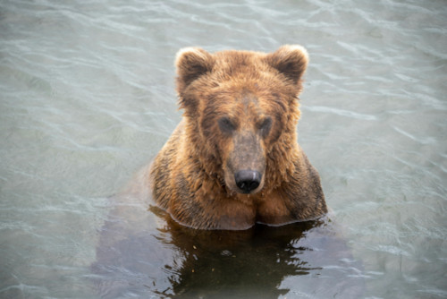
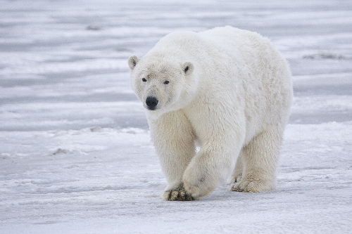
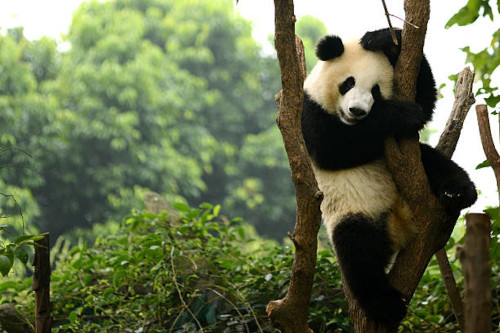

URSOS
Urso é a denominação utilizada para as espécies pertencentes à família Ursidae, uma das famílias mais estudadas e mais ameaçadas entre os animais carnívoros. Seus membros pertencem à classe Mammalia e à ordem Carnivora. A família Ursidae apresenta espécies distribuídas em diversas regiões do planeta, como Europa, Ásia, América do Sul, América do Norte e África, habitando desde regiões de florestas a regiões polares. A seguir descrevemos algumas características desse grupo de animais e algumas de suas espécies. Existem diversas espécies de urso, todavia, iremos falar de três deles: urso pardo, polar e panda.
Ursos Pardos
Os ursos pardos, assim como outros animais do Gênero Ursus, têm o corpo pesado, a cauda curta e garras não retráteis, apresentando-se bastante afiadas. O pelo é longo e espesso, e a cor varia entre branco, dourado e castanho-escuro. São encontrados na Sibéria, Alasca, norte do México, Himalaia e norte da África. Possuem a capacidade de correr até 50km/h, nadar, subir em árvores e também de manterem-se em pé, equilibrando-se com as patas traseiras. Onívoros, sua dieta inclui mel, frutas, larvas, mariposas, peixes, pequenos roedores e carniça de grandes animais. Durante o inverno, ficam reclusos em covas ou cavernas, e passam este período em estado de estivação. Seu metabolismo fica mais lento, retornando ao normal quando as condições ambientais se apresentam favoráveis.
- Reino: Animalia
- Filo: Chordata
- Classe: Mammalia
- Ordem: Carnívoro
- Familía: Ursidae
- Gênero: Ursus
- Espécie: Ursus Arctos
Ursos Polares
O urso polar (Ursus maritimus) é um mamífero solitário que vive nas águas geladas da região do círculo polar ártico. Ele é a maior espécie de ursos que vive em locais com baixa temperatura, sendo muito temido por outros animais que habitam o local. O urso polar é conhecido pelo seu tamanho exuberante e pelos brancos, os quais auxiliam na camuflagem no gelo no momento de caçar. São considerados ótimos nadadores, especialmente por causa das patas dianteiras que são largas. A velocidade da natação é em média de 10 km/h. O urso polar é um animal solitário na maior parte de seu tempo de vida. Somente no período de reprodução, eles vivem de forma coletiva. O urso polar vive nas águas geladas do círculo polar ártico, que envolve principalmente cinco países: Dinamarca, Noruega, Rússia, Estados Unidos (Alasca) e Canadá. As presas mais frequentes na dieta do urso polar são as focas, mas também se alimentam de salmão, aves e outros mamíferos como golfinhos e filhotes de leões marinhos.
- Reino: Animalia
- Filo: Chordata
- Classe: Mammalia
- Ordem: Carnívoro
- Familía: Ursidae
- Gênero: Ursus
- Espécie: Ursus Maritimus
Ursos Pandas
Urso panda é um animal mamífero encontrado na China que se destaca por sua pelagem característica e por sua dieta baseada na ingestão de bambu. Ursos pandas, também chamados de pandas gigantes, são animais mamíferos que se destacam, principalmente, pela sua inconfundível pelagem branca com manchas negras nos olhos e membros, e suas orelhas e ombros negros. Esses animais, apesar de estarem classificados na ordem Carnívora, não têm esse tipo de alimentação, sendo sua dieta baseada no consumo de bambu. A seguir exploraremos mais sobre o modo de vida e as principais características desse mamífero fantástico. Quando falamos que um animal faz parte da ordem Carnívora, logo imaginamos que sua dieta é baseada no consumo de carne. Entretanto, os pandas não se alimentam dessa forma, sendo sua dieta baseada quase exclusivamente na ingestão de bambu. Pandas podem passar até 14 horas por dia alimentando-se, e podem defecar mais de cem vezes em um único dia.
- Reino: Animalia
- Filo: Chordata
- Classe: Mammalia
- Ordem: Carnívoro
- Familía: Ursidae
- Gênero: Ailuropoda
- Espécie: Ailuropoda melanoleuca